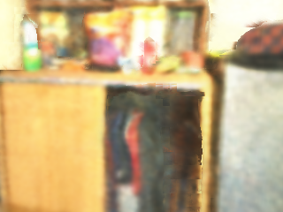
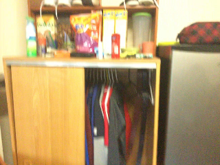
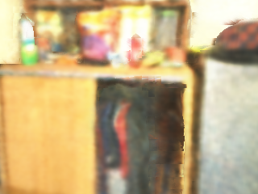
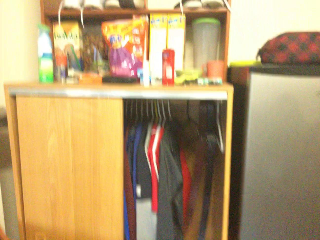

GlORIE-SLAM uses a deformable point cloud as the scene representation
and achieves lower trajectory error and higher rendering accuracy compared to competitive approaches, e.g. GO-SLAM.
The geometric accuracy is qualitatively evaluated. The light blue trajectory is ground
truth and the blue is the estimated. The PSNR is evaluated for all keyframes.

 


